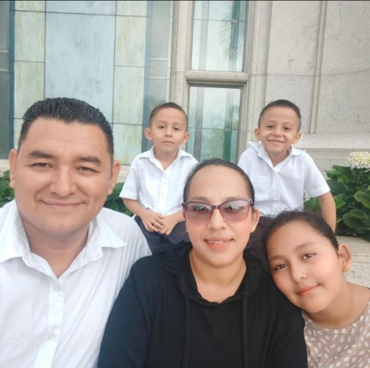

Rafael Alvarado l WDD 130

Hi everyone! My name is Rafael, I am from Ahuachapan, El Salvador. I am excited to learn in this class with all of you. I have been married for 12 years; and I am the father of 2 girls and 2 twin boys and I like to play with them after work.
My major is: Software Development. I currently work in the sales area for a Bank but I want to learn more about technology.